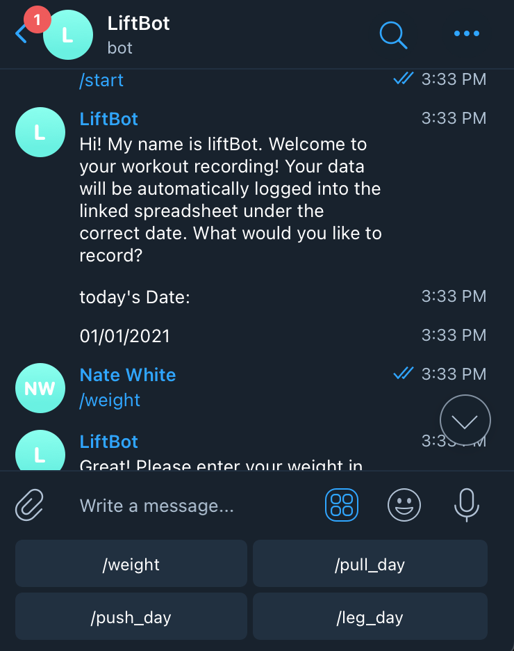
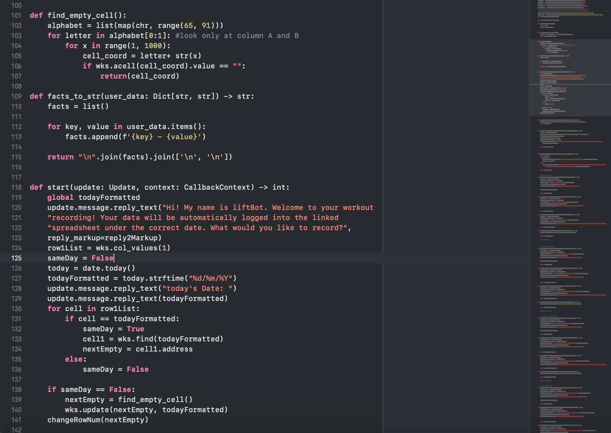

hey there, i'm nate.
student and research assistant at michigan.
about me
Hello! My name is Nathaniel White. Born in Concord, Massachusetts, I'm currently a Freshman at
The University of Michigan currently pursuing a Chemistry major and Computer Science minor through
the College of Literature, Science, and the Arts. I'm passionate about applying my interests at the intersection of
science and technology in order to help others. Outside of class, I like to work on personal computer science projects,
such as this website, and to keep physically active through weight training and Fencing.
education
University of Michigan Ann Arbor
College of Literature, Science and the ArtsClass of 2024
- Major in Chemistry and minor in Computer Science in the College of Literature, Science and the Arts
- Relevant Coursework: EECS 183: Elementary Programming Concepts, Math 116: Calculus II, AP Physics, AP Biology
- Organizations: Michigan Fencing Club, FYE Advisory Board, Michigan Research and Discovery Scholars
Concord Carlisle High School
Class of 2020- Founder and President of Chemistry Club
- Captain of the Varsity Fencing team
- Host of Weekly Current Events Radio Show and Podcast
experience
Gray Associates Higher Ed. Consulting - Intern
June 2020 - September 2020
- Wrote weekly blogs analyzing and predicting trends in job market data
- Utilized Gray Associates' Programs Database to organize and display emerging programs
- Used job market data to create targeted advertisments for Gray's services
Geochemistry Research Lab - Research Assistant
August 2016 - May 2017
- Assist in a variety of daily laboratory tasks under the direction of Dr. Jie Li
- Designed and implemented new circuitry and control systems for the lab's multi-anvil press
- Explored topics relating to the origin and evolution of geomagnetic dynamos in terrestrial planets and their implications
projects
LiftBot - Telegram Chat Bot
An open-source chat bot that allows easy recording of gym routines in order to track progress! Based in the popular messaging app Telegram, it uses the google sheets API in order to communicate with a spreadsheet, opening up possibilities for progress tracking through graphs and charts over time. Interaction with the bot is facilitated through easy-to-use menus that are built-in to the telegram app. App deployment and hosting is done through Heroku. Full code and associated files can be found on my GitHub!
 
contact me
I am always open to chat about new opportunities and my passions.
Feel free to reach out to me via phone or email!
Phone: +1 (978)-902-2286
Email: wnate@umich.edu